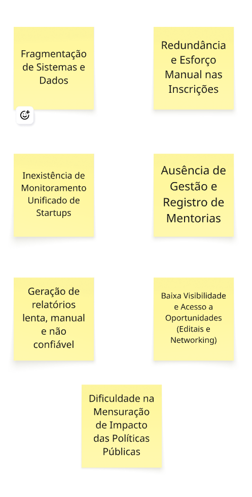
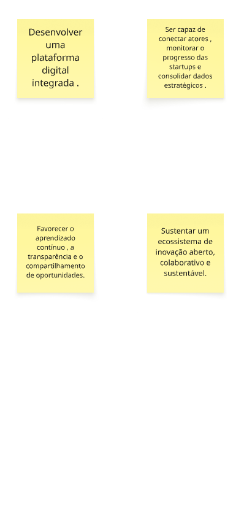
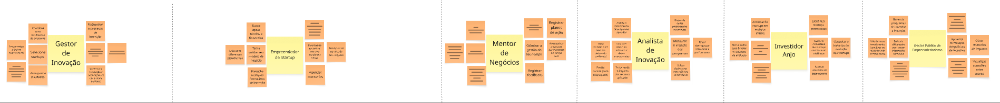
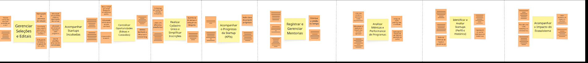
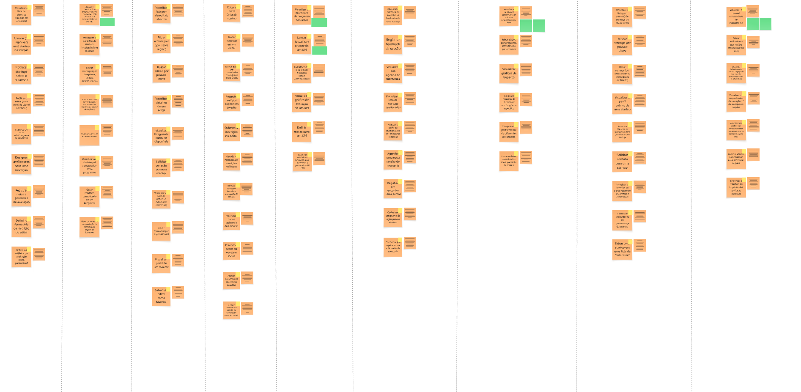
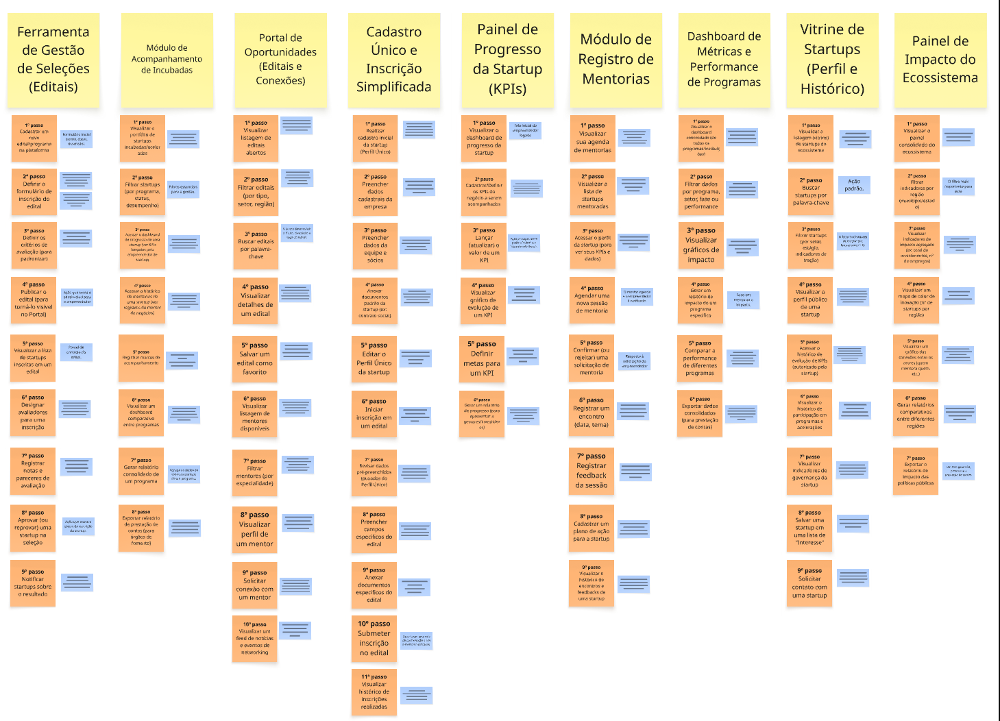

PBB InovaHub
Introdução
-
Aqui vamos descrever um Product Backlog Building (PBB) um método e um Canvas que auxilia na elaboração e no refinamento colaborativo de um Product Backlog, buscando um entendimento compartilhado do produto e alinhando os envolvidos para um trabalho ágil e eficaz. A atividade aqui descrita utiliza o PBB para estruturar a solução para a "InovaHub", uma rede de inovação e empreendedorismo, abordando seus desafios e propondo funcionalidades integradas. Primeiro introduziramos o estudo de caso, após isso mostraremos o PBB como um todo focando na estrutura e por fim cada parte do PBB.
-
O PBB interativo se encontra no final do documento
Introdução Estudo de Caso
A "InovaHub" é uma rede nacional que conecta incubadoras, parques tecnológicos, startups e aceleradoras, com o objetivo de fomentar o desenvolvimento de negócios inovadores e fortalecer o ecossistema de colaboração entre universidades, empresas e governos.
O desafio central é a fragmentação de informações e processos. Atualmente, cada parceiro utiliza sistemas próprios, resultando em:
- Redundância e Desgaste: Empreendedores preenchem múltiplos formulários para se candidatar a programas distintos.
- Gestão Ineficiente: A gestão de mentorias, o acompanhamento de startups (KPIs, crescimento, faturamento) e os relatórios de desempenho são feitos manualmente via planilhas e e-mails, dificultando a visão global e a avaliação de impacto.
- Falta de Transparência e Visibilidade: A dispersão de dados prejudica a captação de recursos e a mensuração de resultados em tempo real.
Diante disso, a InovaHub busca uma plataforma digital integrada capaz de conectar todos os atores (empreendedores, gestores, mentores, investidores e gestores públicos), monitorar o progresso das startups e consolidar dados estratégicos.
Explicação da Estrutura do Product Backlog Building (PBB)

-
O Product Backlog Building (PBB) é estruturado por cinco seções principais, que guiam a equipe desde o entendimento do contexto e dos problemas até a identificação dos itens concretos de trabalho (PBIs). Abaixo está a estrutura completa para o caso "InovaHub", seguindo a ordem ideal para a construção e refinamento do Product Backlog:
-
Contexto e Visão
- Problemas: Define o ponto de partida, listando as dores e os desafios atuais (o estado inicial).
-
Expectativas: Define o ponto de chegada, listando os benefícios e o valor esperado (o estado futuro desejado).
-
Atores e Ações
- Personas: Identifica quem interage com o sistema e define o que cada uma faz ("O Que Faz?") e o que espera do novo produto ("O Que Espera?").
-
Funcionalidades (Features): Agrupa as ações de alto nível que o sistema deve executar para que as Personas atinjam suas expectativas, resolvendo os Problemas.
-
Detalhamento e Fluxo
- PBIs (Product Backlog Items): São os itens de trabalho, o detalhamento das funcionalidades. Cada PBI é um passo concreto (muitas vezes no formato Ação-Resultado-Objeto - ARO) necessário para construir a Feature.
- Steps Map: Mapeia os PBIs em um fluxo sequencial, representando a jornada de trabalho da funcionalidade.
- Priorização (COORG): Organiza os PBIs de forma vertical (por importância) e horizontal (por sequência lógica), definindo a ordem de entrega do Backlog.
Problemas (CORRIGIDOS)

Esta seção lista os desafios e dores enfrentados. As correções focaram em desmembrar problemas e refinar a causa-raiz:
- Ausência de Plataforma Integrada e Repositório Central de Dados: Substitui a "Fragmentação de Sistemas e Dados" para focar na causa-raiz que gera a dispersão e perda de dados estratégicos.
- Desgaste do Empreendedor com Múltiplos Formulários de Inscrição: Foca na dor do empreendedor (redundância de dados e formulários).
- Triagem Manual de Inscrições com Critérios Não Padronizados: Foca na ineficiência do processo de avaliação, sem histórico de desempenho ou critérios claros.
- Ausência de Gestão e Registro de Mentorias: A dificuldade em registrar encontros, temas e resultados de mentorias dificulta o acompanhamento do progresso.
- Inexistência de Monitoramento Unificado de Startups: A falta de consolidação de KPIs e dados de desempenho impede uma visão global do ecossistema e a identificação de padrões de sucesso ou risco.
- Geração de Relatórios Lenta, Manual e Não Confiável: A consolidação manual (via planilhas e e-mails) consome tempo, reduz a confiabilidade e impede o acompanhamento em tempo real.
- Baixa Visibilidade e Acesso a Oportunidades (Editais e Networking): A dispersão de canais e a falta de uma rede estruturada impede o acesso a editais e a conexão com investidores.
- Dificuldade na Mensuração de Impacto das Políticas Públicas: A ausência de dashboards e métricas integradas impede a avaliação e a prestação de contas sobre o impacto dos recursos aplicados.
Expectativas (CORRIGIDAS)

-
Esta seção lista os resultados e benefícios esperados com o desenvolvimento da plataforma (o estado futuro desejado), substituindo descrições genéricas por valor:
-
Garantir a centralização e padronização dos dados estratégicos do ecossistema.
- Prover um ambiente digital único que articule toda a jornada do empreendedor.
- Articular e facilitar a conexão contínua entre empreendedores, mentores, investidores e parceiros.
- Oferecer monitoramento em tempo real do progresso das startups e dos programas.
- Consolidar informações de desempenho para a tomada de decisão estratégica e políticas públicas.
- Promover a transparência e o aprendizado coletivo por meio do compartilhamento de boas práticas e resultados.
- Garantir acesso facilitado e unificado a editais, mentorias e oportunidades de fomento.
- Sustentar um ecossistema de inovação aberto, colaborativo e sustentável.
Personas (CORRIGIDAS)

- Esta seção identifica os principais atores do ecossistema. As correções garantem que O Que Faz? sejam Ações e O Que Espera? sejam Funcionalidades/Módulos.
Gestor de Inovação * O que faz (ações reais): Gerencia programas de incubação/aceleração. Seleciona startups (usando formulários dispersos). Coleta dados manualmente e Compara resultados. Acompanha resultados e Presta Contas (tarefas manuais). * O que espera (funcionalidades desejadas): Plataforma Integrada de Gestão. Gestão Unificada de Inscrições. Gestão de Acompanhamento e Avaliação. Automatização de Relatórios.
Empreendedor de Startup * O que faz (ações reais): Busca apoio técnico e financeiro. Lida com diferentes plataformas de fomento. Tenta validar seu modelo de negócio. Preenche múltiplos formulários. * O que espera (funcionalidades desejadas): Acessar oportunidades de fomento, mentores e networking. Inscrever-se em editais por uma única plataforma. Acompanhar KPIs do seu negócio. Agendar mentorias.
Mentor de Negócios * O que faz (ações reais): Atua como mentor voluntariamente. Acompanha empreendedores. Organiza reuniões e registros. Lida com tarefas administrativas (agendas). * O que espera (funcionalidades desejadas): Melhorar o acompanhamento das startups mentoradas. Registrar planos de ação. Registrar feedbacks. Acompanhar evolução das mentorias em tempo real. Otimizar a gestão do tempo.
Analista de Inovação * O que faz (ações reais): Analisa o desempenho de programas apoiados. Lida com relatórios extensos e dados inconsistentes. Toma decisões baseadas em dados disponíveis. Mede o impacto dos recursos aplicados. Presta contas. * O que espera (funcionalidades desejadas): Dispor de dados padronizados e confiáveis. Mensurar impacto de programas por métricas claras. Filtrar startups por setor, fase ou performance. Utilizar dashboards com métricas consolidadas.
Investidor Anjo * O que faz (ações reais): Acompanha startups em estágios iniciais. Busca dados qualificados e históricos de evolução. Procura oportunidades de investimento. Identifica startups promissoras. Avalia maturidade de startups com base em evidências. * O que espera (funcionalidades desejadas): Consultar histórico de evolução das startups. Acessar relatórios de desempenho. Filtrar startups por estágio, setor e performance.
Gestor Público de Empreendedorismo * O que faz (ações reais): Gerencia programas de incentivo à inovação. Acompanha novos investimentos. Busca informações confiáveis para apoiar decisões. Tenta acompanhar o impacto das políticas públicas. * O que espera (funcionalidades desejadas): Acompanhar de forma integrada o desempenho do ecossistema. Apoiar a formulação de políticas de incentivo com base em dados. Obter relatórios de impacto consolidados. Consultar um painel de indicadores regionais. Visualizar conexões entre atores do ecossistema.
Funcionalidades

- Esta seção lista as funcionalidades de alto nível propostas, identificando os problemas que resolvem e os benefícios que trazem para as Personas:
Realizar Cadastro Único e Simplificar Inscrições * Problemas Resolvidos: Sobrecarga por preencher múltiplos formulários; lidar com diferentes plataformas; redundância e desgaste causados por dados raramente reaproveitados entre instituições. * Benefícios Entregues: Economia de tempo e redução do desgaste; possibilidade de se candidatar a mais programas com menos esforço.
Gerenciar Seleções e Editais * Problemas Resolvidos: Triagem manual das inscrições recebidas por e-mail; falta de critérios padronizados ou histórico de desempenho anterior para avaliar as startups. * Benefícios Entregues: Otimização do processo de seleção; garantia de uma avaliação padronizada e mais justa dos candidatos; redução do retrabalho na gestão de inscrições.
Acompanhar Startups Incubadas * Problemas Resolvidos: Dificuldade em consolidar dados de desempenho das startups; dificuldade em comparar resultados entre programas; uso de planilhas próprias não consolidadas. * Benefícios Entregues: Automatização da prestação de contas com relatórios automáticos; visão clara, padronizada e consolidada do desempenho do seu portfólio.
Registrar e Gerenciar Mentorias * Problemas Resolvidos: Falta de acesso consolidado às informações das startups que orienta; perda de tempo tentando organizar reuniões e registros de acompanhamento; ausência de um sistema que registre os encontros, os temas abordados ou os resultados obtidos. * Benefícios Entregues: Otimizar a gestão do tempo; centralização das informações para melhorar o acompanhamento e avaliar o impacto das orientações.
Acompanhar o Progresso da Startup (KPIs) * Problemas Resolvidos: Acompanhamento feito por múltiplos canais; ausência de um espaço digital unificado que articule a jornada do empreendedor. * Benefícios Entregues: Visão clara do próprio progresso; facilidade para compartilhar seus indicadores de progresso com gestores e mentores.
Centralizar Oportunidades (Editais e Conexões) * Problemas Resolvidos: Busca manual por editais divulgados em diferentes portais; dificuldade em conectar-se com mentores; comunicações dispersas. * Benefícios Entregues: Centralização de todas as oportunidades (editais, mentores) em um único ambiente; acesso facilitado a recursos e networking.
Identificar e Avaliar Startups (Perfil e Histórico) * Problemas Resolvidos: Não possuir um canal estruturado para identificar startups promissoras; falta de dados qualificados e históricos de evolução de cada empreendimento; falta de métricas de tração e governança. * Benefícios Entregues: Acesso a dados qualificados e indicadores de mercado e governança para avaliar investimentos; capacidade de avaliar com base em evidências.
Analisar Métricas e Performance de Programas * Problemas Resolvidos: Lidar com relatórios extensos e dados inconsistentes; dificuldade na medição do impacto dos recursos aplicados; geração de relatórios de forma manual que consome tempo e reduz a confiabilidade das informações. * Benefícios Entregues: Dispor de dados padronizados e confiáveis; agilidade na tomada de decisão e na prestação de contas.
Acompanhar o Impacto do Ecossistema * Problemas Resolvidos: Dificuldades para reunir informações confiáveis de diferentes instituições; falta de uma visão sistêmica do ecossistema; obstáculos para mensurar o impacto dos investimentos e das políticas públicas. * Benefícios Entregues: Obter relatórios de impacto e relatórios comparativos; basear a orientação de novos investimentos e políticas de incentivo em dados consolidados.
PBIs (Product Backlog Items)

Steps Map

COORG

-
A técnica COORG (Classificar, Ordenar e Organizar) é utilizada para realizar a priorização do Product Backlog, definindo em qual ordem os PBIs (Product Backlog Items) serão desenvolvidos. A primeira etapa é a Classificação, onde os itens são pontuados com base em critérios e uma fórmula.
-
Critérios de Classificação
1. Frequência de Uso: * Por Hora = 5 * Diário = 4 * Semanal = 3 * Mensal = 2 * Trimestral = 1
2. Valor de Negócio: * Alto = 3 (Muito importante, principal, com alto valor de negócio) * Médio = 2 (Relevância, valor de negócio médio) * Baixo = 1 (Faz sentido, mas que não agrega muito valor no momento atual)
- Fórmula de Prioridade
A prioridade de cada PBI é calculada somando-se as pontuações dos critérios:
Prioridade = Frequência de Uso + Valor de Negócio
(Onde a pontuação máxima é 8 e a mínima é 2.)